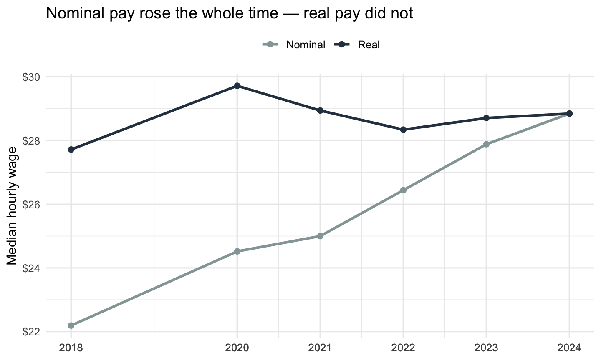
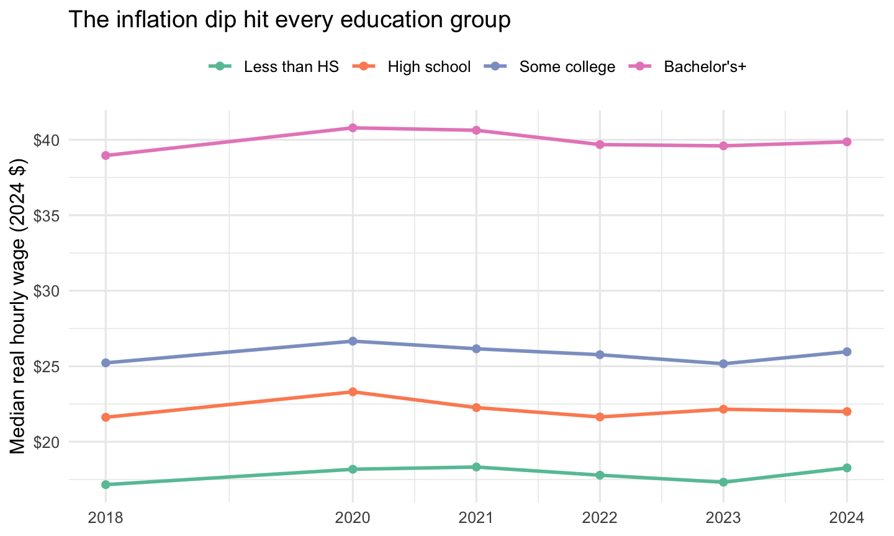
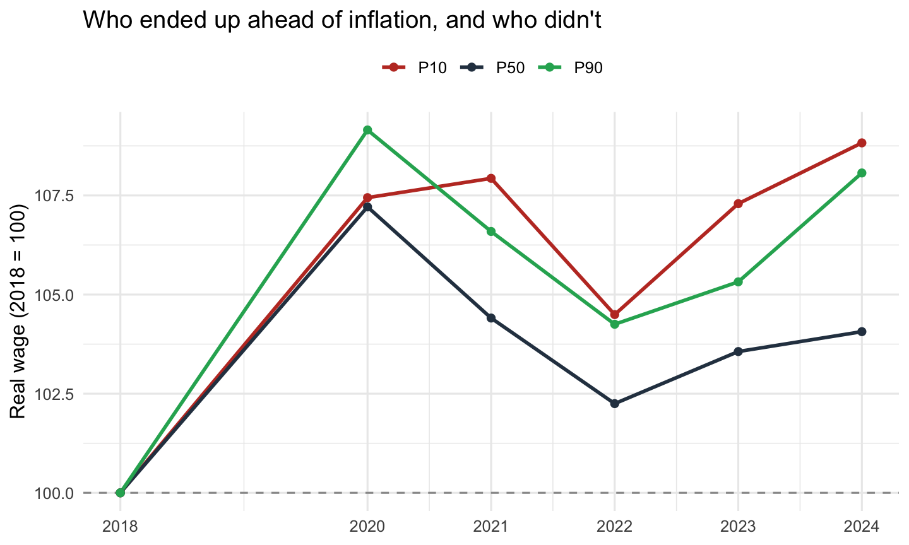

Between 2021 and 2023 the United States lived through its sharpest burst of inflation in forty years: consumer prices rose about 8% in 2022 alone. Wages also rose over the same period, and headlines could point to “record pay increases” on any given month. But a raise only makes you better off if it beats the price of the things you buy. So the question that actually matters to a worker is not did my pay go up? but did my pay go up faster than prices?
This post uses U.S. Census microdata to answer that for the American workforce: what happened to real (inflation-adjusted) hourly wages through the 2021–2024 inflation shock, and did every kind of worker fare the same? The three figures build the answer in layers: first the aggregate, then by education, then across the wage distribution.
The data and how it is measured
The data are individual-level records from the IPUMS Current Population Survey (CPS), Annual Social and Economic Supplement (ASEC), for survey years 2019 and 2021–2025. Each ASEC asks about income earned in the previous calendar year, so these samples describe earnings for 2018 and 2020–2024.
Two measurement choices matter and are worth stating plainly:
Hourly wage, not annual income. Annual wage income mixes together how much someone earns per hour with how many hours they worked. To isolate the price of an hour of labour, I compute an hourly wage as INCWAGE / (WKSWORK1 × UHRSWORKLY) : annual wage income divided by weeks worked times usual hours per week.
Sampling weights. The CPS is a sample, not a census, and each respondent stands in for a different number of real Americans. Every statistic below is therefore weighted by the ASEC person weight (ASECWT), so the numbers describe the U.S. working population, not just the people who happened to be surveyed.
To turn nominal dollars into real dollars I deflate every year’s wage by the BLS Consumer Price Index (CPI-U, annual average), expressing everything in 2024 dollars. That way a wage in 2018 and a wage in 2024 can be compared on the same purchasing-power ruler.
Code
# --- 1. Read the committed CPS extract (readr reads .gz directly) ----------cps_raw <-read_csv(here("blog", "posts", "post3", "data", "cps_00001.csv.gz"),col_select =c(YEAR, AGE, SEX, EDUC, WKSWORK1, UHRSWORKLY, INCWAGE, ASECWT),show_col_types =FALSE)# --- 2. CPI-U annual average (BLS, series CUUR0000SA0), base = 2024 ---------cpi <-tribble(~income_year, ~cpi_u,2018, 251.107,2020, 258.811,2021, 270.970,2022, 292.655,2023, 304.702,2024, 313.689)cpi_base <- cpi$cpi_u[cpi$income_year ==2024] # deflate everything to 2024 $# --- 3. Build the analysis sample ------------------------------------------# Keep prime-age (25-64) wage earners with valid, positive wages/weeks/hours.# INCWAGE 99999998/99999999 = missing/NIU; UHRSWORKLY 999 = NIU — all dropped.wages <- cps_raw |>mutate(income_year = YEAR -1L) |>filter( AGE >=25, AGE <=64, INCWAGE >0, INCWAGE <99999998, WKSWORK1 >=1, WKSWORK1 <=52, UHRSWORKLY >=1, UHRSWORKLY <=99 ) |>mutate(hourly_nom = INCWAGE / (WKSWORK1 * UHRSWORKLY)) |>filter(hourly_nom >=2, hourly_nom <=500) |># drop clear coding errorsleft_join(cpi, by ="income_year") |>mutate(hourly_real = hourly_nom * (cpi_base / cpi_u), # 2024 dollarseduc_group =case_when( EDUC %in%2:72~"Less than HS", EDUC ==73~"High school", EDUC %in%74:110~"Some college", EDUC >=111~"Bachelor's+",TRUE~NA_character_ ),educ_group =factor(educ_group,levels =c("Less than HS", "High school", "Some college", "Bachelor's+")) )# --- 4. Weighted quantile helper (self-contained, no extra package) ---------wtd_quantile <-function(x, w, probs) { ok <-!is.na(x) &!is.na(w) x <- x[ok]; w <- w[ok] ord <-order(x); x <- x[ord]; w <- w[ord] cw <- (cumsum(w) -0.5* w) /sum(w)approx(cw, x, xout = probs, rule =2)$y}wtd_median <-function(x, w) wtd_quantile(x, w, 0.5)
Code
# Fig 1 data: weighted median wage per year, nominal vs realagg_overall <- wages |>group_by(income_year) |>summarise(Nominal =wtd_median(hourly_nom, ASECWT),Real =wtd_median(hourly_real, ASECWT),.groups ="drop" ) |>pivot_longer(c(Nominal, Real), names_to ="measure", values_to ="wage")# Fig 2 data: weighted median REAL wage per year, by educationagg_educ <- wages |>filter(!is.na(educ_group)) |>group_by(income_year, educ_group) |>summarise(real_median =wtd_median(hourly_real, ASECWT), .groups ="drop")# Fig 3 data: weighted P10/P50/P90 of REAL wage, indexed to first year = 100agg_pct <- wages |>group_by(income_year) |>summarise(P10 =wtd_quantile(hourly_real, ASECWT, 0.10),P50 =wtd_quantile(hourly_real, ASECWT, 0.50),P90 =wtd_quantile(hourly_real, ASECWT, 0.90),.groups ="drop" ) |>pivot_longer(c(P10, P50, P90), names_to ="pctile", values_to ="wage") |>group_by(pctile) |>arrange(income_year) |>mutate(index =100* wage /first(wage)) |>ungroup()
What the data show
The analysis sample is 352,566 prime-age (25–64) wage earners across the six years. Figure 1 sets up the puzzle.
Code
ggplot(agg_overall, aes(income_year, wage, colour = measure)) +geom_line(linewidth =1.1) +geom_point(size =2) +scale_colour_manual(values =c(Nominal ="#95a5a6", Real ="#2c3e50"), name =NULL) +scale_y_continuous(labels =label_dollar()) +scale_x_continuous(breaks = agg_overall$income_year) +labs(x =NULL, y ="Median hourly wage",title ="Nominal pay rose the whole time — real pay did not") +theme_minimal(base_size =12) +theme(legend.position ="top")

Figure 1: Median hourly wage, nominal vs. inflation-adjusted (2024 dollars). Nominal pay kept climbing; real pay stalled and fell during the 2021–22 inflation peak before recovering.
The two lines tell opposite stories. In nominal terms the median hourly wage rose about 30% from 2018 to 2024: the “pay is rising” headline. But once we strip out inflation, the real median wage in 2022 was actually +2.2% relative to 2018: the raises workers received were smaller than the price increases they faced, so purchasing power fell at the height of the inflation shock. By 2024 real wages had clawed back to about +4.1% versus 2018: a recovery, but a modest one spread over six years.
Figure 2 asks who absorbed the squeeze, by splitting the real median wage by education.
Code
ggplot(agg_educ, aes(income_year, real_median, colour = educ_group)) +geom_line(linewidth =1) +geom_point(size =1.8) +scale_colour_brewer(palette ="Set2", name =NULL) +scale_y_continuous(labels =label_dollar()) +scale_x_continuous(breaks =unique(agg_educ$income_year)) +labs(x =NULL, y ="Median real hourly wage (2024 $)",title ="The inflation dip hit every education group") +theme_minimal(base_size =12) +theme(legend.position ="top")

Figure 2: Median real hourly wage (2024 dollars) by education. The gap between more- and less-educated workers is wide and persistent, and every group dips during the inflation peak.
The levels are unsurprising, more schooling, higher pay. But the shape is the point: all four lines bend downward through 2021–2022 together. Inflation did not respect a diploma; it lowered real pay across the board before the partial recovery. That pushes the interesting question one level deeper: within the workforce, did the lowest-paid workers lose the most? Figure 3 answers it by tracking the 10th, 50th, and 90th percentiles of the real wage, each indexed to its own 2018 value.
Code
ggplot(agg_pct, aes(income_year, index, colour = pctile)) +geom_hline(yintercept =100, colour ="grey60", linetype ="dashed") +geom_line(linewidth =1) +geom_point(size =1.8) +scale_colour_manual(values =c(P10 ="#c0392b", P50 ="#2c3e50", P90 ="#27ae60"),name =NULL) +scale_x_continuous(breaks =unique(agg_pct$income_year)) +labs(x =NULL, y ="Real wage (2018 = 100)",title ="Who ended up ahead of inflation, and who didn't") +theme_minimal(base_size =12) +theme(legend.position ="top")

Figure 3: Cumulative change in real hourly wage by percentile, indexed to 2018 = 100. A line below 100 means that part of the distribution had less purchasing power than in 2018.
Table 1: Real hourly wage percentiles (2024 dollars), by income year.
Income year
P10
P50
P90
2018
12.47
27.72
66.73
2020
13.40
29.72
72.84
2021
13.46
28.94
71.13
2022
13.03
28.34
69.57
2023
13.38
28.71
70.28
2024
13.57
28.85
72.12
By the end of the window the bottom of the distribution (P10) sits near 109 on the 2018 = 100 scale, while the top (P90) sits near 108. Read together, the three figures say the inflation shock was broadly shared rather than sharply regressive: every group’s real wage dipped and then largely recovered, and low-wage workers did not fall dramatically further behind high-wage workers over the full period.
Takeaway
The headline “wages are rising” was true and misleading at the same time. Nominal pay rose throughout, but the CPS microdata show that real median pay fell during 2021–2022 (workers’ raises lost a race against prices) and only recovered to modestly above its 2018 level by 2024. Splitting the workforce shows the squeeze was general: it hit every education group and ran across the wage distribution, rather than concentrating on one part of it.
The broader lesson is methodological, and it is the whole reason this post uses weighted microdata rather than a single headline number: to say something true about the American worker, you have to (1) adjust nominal pay for inflation and (2) weight the sample so it represents the population. Do neither and “pay is up 8%” reads as good news. Do both and you see that, for the typical worker, the inflation years were a real-wage setback that took until 2024 to undo.
Data source: IPUMS CPS (Flood et al.), ASEC samples for survey years 2019 and 2021–2025, extract in data/cps_00001.csv.gz. Inflation adjustment uses the BLS Consumer Price Index for All Urban Consumers (CPI-U, series CUUR0000SA0, annual average). All statistics use the ASEC person weight (ASECWT). Code to reproduce the analysis is in the linked GitHub repository.
Source Code
---title: "Did Paychecks Keep Up? Real Wages Through the 2021–2024 Inflation Shock"date: 2026-09-28categories: - labor market - inflationformat: html: toc: true toc-depth: 2 code-fold: true code-tools: true df-print: kable theme: cosmoexecute: warning: false message: false---```{r}#| label: setup#| include: falselibrary(readr) # read the CPS extractlibrary(dplyr) # data wranglinglibrary(tidyr) # reshapinglibrary(stringr) # labelslibrary(forcats) # ordered factors for plottinglibrary(ggplot2) # figureslibrary(scales) # axis formatting ($, %)library(knitr) # kable tableslibrary(here) # project-relative pathsset.seed(6400)options(scipen =999)```# The questionBetween 2021 and 2023 the United States lived through its sharpest burst ofinflation in forty years: consumer prices rose about 8% in 2022 alone. Wagesalso rose over the same period, and headlines could point to "record payincreases" on any given month. But a raise only makes you better off if it beatsthe price of the things you buy. So the question that actually matters to a workeris not *did my pay go up?* but **did my pay go up faster than prices?**This post uses U.S. Census microdata to answer that for the American workforce:**what happened to real (inflation-adjusted) hourly wages through the 2021–2024inflation shock, and did every kind of worker fare the same?** The three figuresbuild the answer in layers: first the aggregate, then by education, then acrossthe wage distribution.# The data and how it is measuredThe data are individual-level records from the **IPUMS Current Population Survey(CPS)**, Annual Social and Economic Supplement (ASEC), for survey years 2019 and2021–2025. Each ASEC asks about income earned in the *previous* calendar year, sothese samples describe earnings for **2018 and 2020–2024**.Two measurement choices matter and are worth stating plainly:- **Hourly wage, not annual income.** Annual wage income mixes together how much someone earns *per hour* with how many hours they worked. To isolate the price of an hour of labour, I compute an hourly wage as`INCWAGE / (WKSWORK1 × UHRSWORKLY)` : annual wage income divided by weeks worked times usual hours per week.- **Sampling weights.** The CPS is a *sample*, not a census, and each respondent stands in for a different number of real Americans. Every statistic below is therefore weighted by the ASEC person weight (`ASECWT`), so the numbers describe the U.S. working population, not just the people who happened to be surveyed.To turn nominal dollars into **real** dollars I deflate every year's wage by theBLS Consumer Price Index (CPI-U, annual average), expressing everything in **2024dollars**. That way a wage in 2018 and a wage in 2024 can be compared on the samepurchasing-power ruler.```{r}#| label: load-and-build# --- 1. Read the committed CPS extract (readr reads .gz directly) ----------cps_raw <-read_csv(here("blog", "posts", "post3", "data", "cps_00001.csv.gz"),col_select =c(YEAR, AGE, SEX, EDUC, WKSWORK1, UHRSWORKLY, INCWAGE, ASECWT),show_col_types =FALSE)# --- 2. CPI-U annual average (BLS, series CUUR0000SA0), base = 2024 ---------cpi <-tribble(~income_year, ~cpi_u,2018, 251.107,2020, 258.811,2021, 270.970,2022, 292.655,2023, 304.702,2024, 313.689)cpi_base <- cpi$cpi_u[cpi$income_year ==2024] # deflate everything to 2024 $# --- 3. Build the analysis sample ------------------------------------------# Keep prime-age (25-64) wage earners with valid, positive wages/weeks/hours.# INCWAGE 99999998/99999999 = missing/NIU; UHRSWORKLY 999 = NIU — all dropped.wages <- cps_raw |>mutate(income_year = YEAR -1L) |>filter( AGE >=25, AGE <=64, INCWAGE >0, INCWAGE <99999998, WKSWORK1 >=1, WKSWORK1 <=52, UHRSWORKLY >=1, UHRSWORKLY <=99 ) |>mutate(hourly_nom = INCWAGE / (WKSWORK1 * UHRSWORKLY)) |>filter(hourly_nom >=2, hourly_nom <=500) |># drop clear coding errorsleft_join(cpi, by ="income_year") |>mutate(hourly_real = hourly_nom * (cpi_base / cpi_u), # 2024 dollarseduc_group =case_when( EDUC %in%2:72~"Less than HS", EDUC ==73~"High school", EDUC %in%74:110~"Some college", EDUC >=111~"Bachelor's+",TRUE~NA_character_ ),educ_group =factor(educ_group,levels =c("Less than HS", "High school", "Some college", "Bachelor's+")) )# --- 4. Weighted quantile helper (self-contained, no extra package) ---------wtd_quantile <-function(x, w, probs) { ok <-!is.na(x) &!is.na(w) x <- x[ok]; w <- w[ok] ord <-order(x); x <- x[ord]; w <- w[ord] cw <- (cumsum(w) -0.5* w) /sum(w)approx(cw, x, xout = probs, rule =2)$y}wtd_median <-function(x, w) wtd_quantile(x, w, 0.5)``````{r}#| label: aggregate# Fig 1 data: weighted median wage per year, nominal vs realagg_overall <- wages |>group_by(income_year) |>summarise(Nominal =wtd_median(hourly_nom, ASECWT),Real =wtd_median(hourly_real, ASECWT),.groups ="drop" ) |>pivot_longer(c(Nominal, Real), names_to ="measure", values_to ="wage")# Fig 2 data: weighted median REAL wage per year, by educationagg_educ <- wages |>filter(!is.na(educ_group)) |>group_by(income_year, educ_group) |>summarise(real_median =wtd_median(hourly_real, ASECWT), .groups ="drop")# Fig 3 data: weighted P10/P50/P90 of REAL wage, indexed to first year = 100agg_pct <- wages |>group_by(income_year) |>summarise(P10 =wtd_quantile(hourly_real, ASECWT, 0.10),P50 =wtd_quantile(hourly_real, ASECWT, 0.50),P90 =wtd_quantile(hourly_real, ASECWT, 0.90),.groups ="drop" ) |>pivot_longer(c(P10, P50, P90), names_to ="pctile", values_to ="wage") |>group_by(pctile) |>arrange(income_year) |>mutate(index =100* wage /first(wage)) |>ungroup()``````{r}#| label: prose-stats#| include: falsen_workers <-nrow(wages)real_2018 <- agg_overall |>filter(income_year ==2018, measure =="Real") |>pull(wage)real_2022 <- agg_overall |>filter(income_year ==2022, measure =="Real") |>pull(wage)real_2024 <- agg_overall |>filter(income_year ==2024, measure =="Real") |>pull(wage)nom_2018 <- agg_overall |>filter(income_year ==2018, measure =="Nominal") |>pull(wage)nom_2024 <- agg_overall |>filter(income_year ==2024, measure =="Nominal") |>pull(wage)nom_growth <-100* (nom_2024 / nom_2018 -1)real_growth <-100* (real_2024 / real_2018 -1)real_dip <-100* (real_2022 / real_2018 -1)# P10 vs P90 cumulative real change over the windowp10_end <- agg_pct |>filter(pctile =="P10") |>arrange(income_year) |>pull(index) |>last()p90_end <- agg_pct |>filter(pctile =="P90") |>arrange(income_year) |>pull(index) |>last()```# What the data showThe analysis sample is **`r comma(n_workers)`** prime-age (25–64) wage earnersacross the six years. Figure 1 sets up the puzzle.```{r}#| label: fig-nominal-real#| fig-cap: "Median hourly wage, nominal vs. inflation-adjusted (2024 dollars). Nominal pay kept climbing; real pay stalled and fell during the 2021–22 inflation peak before recovering."#| fig-width: 7.5#| fig-height: 4.5ggplot(agg_overall, aes(income_year, wage, colour = measure)) +geom_line(linewidth =1.1) +geom_point(size =2) +scale_colour_manual(values =c(Nominal ="#95a5a6", Real ="#2c3e50"), name =NULL) +scale_y_continuous(labels =label_dollar()) +scale_x_continuous(breaks = agg_overall$income_year) +labs(x =NULL, y ="Median hourly wage",title ="Nominal pay rose the whole time — real pay did not") +theme_minimal(base_size =12) +theme(legend.position ="top")```The two lines tell opposite stories. In nominal terms the median hourly wage roseabout **`r round(nom_growth)`%** from 2018 to 2024: the "pay is rising" headline.But once we strip out inflation, the real median wage in 2022 was actually**`r sprintf('%+.1f', real_dip)`%** relative to 2018: the raises workers receivedwere smaller than the price increases they faced, so purchasing power *fell* at theheight of the inflation shock. By 2024 real wages had clawed back to about**`r sprintf('%+.1f', real_growth)`%** versus 2018: a recovery, but a modest onespread over six years.Figure 2 asks *who* absorbed the squeeze, by splitting the real median wage byeducation.```{r}#| label: fig-education#| fig-cap: "Median real hourly wage (2024 dollars) by education. The gap between more- and less-educated workers is wide and persistent, and every group dips during the inflation peak."#| fig-width: 7.5#| fig-height: 4.5ggplot(agg_educ, aes(income_year, real_median, colour = educ_group)) +geom_line(linewidth =1) +geom_point(size =1.8) +scale_colour_brewer(palette ="Set2", name =NULL) +scale_y_continuous(labels =label_dollar()) +scale_x_continuous(breaks =unique(agg_educ$income_year)) +labs(x =NULL, y ="Median real hourly wage (2024 $)",title ="The inflation dip hit every education group") +theme_minimal(base_size =12) +theme(legend.position ="top")```The levels are unsurprising, more schooling, higher pay. But the *shape* is thepoint: all four lines bend downward through 2021–2022 together. Inflation did notrespect a diploma; it lowered real pay across the board before the partialrecovery. That pushes the interesting question one level deeper: within theworkforce, did the *lowest*-paid workers lose the most? Figure 3 answers it bytracking the 10th, 50th, and 90th percentiles of the real wage, each indexed toits own 2018 value.```{r}#| label: fig-percentiles#| fig-cap: "Cumulative change in real hourly wage by percentile, indexed to 2018 = 100. A line below 100 means that part of the distribution had less purchasing power than in 2018."#| fig-width: 7.5#| fig-height: 4.5ggplot(agg_pct, aes(income_year, index, colour = pctile)) +geom_hline(yintercept =100, colour ="grey60", linetype ="dashed") +geom_line(linewidth =1) +geom_point(size =1.8) +scale_colour_manual(values =c(P10 ="#c0392b", P50 ="#2c3e50", P90 ="#27ae60"),name =NULL) +scale_x_continuous(breaks =unique(agg_pct$income_year)) +labs(x =NULL, y ="Real wage (2018 = 100)",title ="Who ended up ahead of inflation, and who didn't") +theme_minimal(base_size =12) +theme(legend.position ="top")``````{r}#| label: tbl-pct#| tbl-cap: "Real hourly wage percentiles (2024 dollars), by income year."agg_pct |>mutate(wage =round(wage, 2)) |>select(income_year, pctile, wage) |>pivot_wider(names_from = pctile, values_from = wage) |>rename(`Income year`= income_year) |>kable()```By the end of the window the bottom of the distribution (P10) sits near**`r round(p10_end)`** on the 2018 = 100 scale, while the top (P90) sits near**`r round(p90_end)`**. Read together, the three figures say the inflation shockwas broadly shared rather than sharply regressive: every group's real wage dippedand then largely recovered, and low-wage workers did *not* fall dramaticallyfurther behind high-wage workers over the full period.# TakeawayThe headline "wages are rising" was true and misleading at the same time. Nominalpay rose throughout, but the CPS microdata show that **real** median pay fellduring 2021–2022 (workers' raises lost a race against prices) and only recoveredto modestly above its 2018 level by 2024. Splitting the workforce shows the squeezewas general: it hit every education group and ran across the wage distribution,rather than concentrating on one part of it.The broader lesson is methodological, and it is the whole reason this post usesweighted microdata rather than a single headline number: to say something trueabout *the American worker*, you have to (1) adjust nominal pay for inflation and(2) weight the sample so it represents the population. Do neither and "pay is up8%" reads as good news. Do both and you see that, for the typical worker, theinflation years were a real-wage setback that took until 2024 to undo.---*Data source: IPUMS CPS (Flood et al.), ASEC samples for survey years 2019 and2021–2025, extract in `data/cps_00001.csv.gz`. Inflation adjustment uses the BLSConsumer Price Index for All Urban Consumers (CPI-U, series CUUR0000SA0, annualaverage). All statistics use the ASEC person weight (ASECWT). Code to reproducethe analysis is in the linked GitHub repository.*